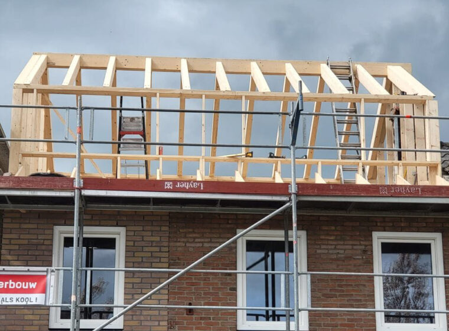

Kort antwoord: de kap bepaalt meer dan het vloeroppervlak
De kosten van een nokverhoging hangen vooral af van de lengte en vorm van de kap, een eenzijdige of tweezijdige aanpassing, de bestaande constructie, kozijnen en het hijswerk. Twee zolders met hetzelfde vloeroppervlak kunnen daardoor een andere investering vragen.
Wij geven na het samenstellen van je plan een casco-prijsindicatie als bandbreedte. De definitieve offerte volgt pas nadat maatvoering, draagconstructie en bereikbaarheid op locatie zijn gecontroleerd.

Bewaar deze 7 cijfers voor je aanvraag
- Woningbreedte: meet binnenwerks én buitenwerks, in centimeters.
- Lengte van de verhoging: welk deel van de kap moet worden aangepast?
- Huidige hoogte: meet van afgewerkte vloer tot onderkant nok.
- Gewenste stahoogte: markeer waar je straks comfortabel wilt lopen.
- Dakhelling: noteer die uit bouwtekening of meting; niet gokken op een foto.
- Openingen: aantal en globale maten van ramen en deuren.
- Obstakels: tel dakramen, zonnepanelen, schoorstenen en installaties die moeten wijken.
Voeg foto’s van voor- en achtergevel, de hele zolder en de straat toe. Daarmee kan een aanbieder sneller zien welke informatie nog ontbreekt. Deze cijfers zijn een start; ze vervangen geen constructieberekening.
Wat zit in de casco-bandbreedte?
Bij Aanbouwdirect gaat casco om de aangepaste draagconstructie, geïsoleerde en wind- en waterdichte schil, kozijnen en elektra tot casco-niveau. Stucwerk, vloer, badkamer, schilderwerk binnen, vergunning, leges en tekenwerk zitten niet standaard in de online indicatie. Lees ook wat casco bij ons inhoudt.
Vraag bij iedere offerte dezelfde uitsplitsing: sloop en afvoer, constructie en staal, dak en isolatie, kozijnen, kraan en steiger, elektra, vergunningstraject, binnenafbouw, btw en stelposten. Zo voorkom je dat een lage prijs vooral een kleinere scope blijkt.
Eenzijdig, tweezijdig of een andere oplossing?
Een eenzijdige nokverhoging wijzigt één dakvlak; een tweezijdige variant verandert beide kanten en levert doorgaans meer bruikbaar volume op. Wat technisch en ruimtelijk past, hangt af van kap, buren, straatbeeld en regels. Vergelijk eerst nokverhoging en dakopbouw. Heb je alleen lokaal extra licht en stahoogte nodig, dan kan een dakkapel voldoende zijn; die plaatst Aanbouwdirect niet.
Vergunning en regels in 2026
Door de wijziging van hoogte en aanzicht is een adrescheck noodzakelijk. Doe de officiële Vergunningcheck van het Omgevingsloket en bewaar de uitkomst. De Rijksoverheid zet de algemene stappen bij bouwen en verbouwen op volgorde. Een positieve vergunningcheck is nog geen constructieve goedkeuring: laat beide sporen afzonderlijk beoordelen.
Veelgestelde vragen
Wat kost een nokverhoging in 2026?
Zonder kapmaat, variant, constructie, kozijnen en bereikbaarheid is een bedrag misleidend. Vul je maten in voor een casco-bandbreedte; na opname op locatie volgt een definitieve offerte.
Is een eenzijdige nokverhoging altijd goedkoper?
Niet automatisch. De ingreep is kleiner, maar aansluitingen, staal, steiger en kraan blijven projectspecifiek. Vergelijk offertes alleen met dezelfde scope.
Kan ik de zolder direct als slaapkamer gebruiken?
Niet alleen door de nok te verhogen. Ook daglicht, ventilatie, vluchtroute, trap, constructie en binnenafbouw moeten passen bij het beoogde gebruik.
Heb ik een vergunning nodig?
Dat verschilt per adres en ontwerp. Gebruik de actuele Vergunningcheck en stem de uitkomst bij twijfel af met je gemeente.
Wanneer krijg ik een definitieve prijs?
Na de online indicatie controleren we maatvoering, constructie en bereikbaarheid op locatie. Daarna kan de projectspecifieke offerte worden gemaakt.
Verder met jouw plan?
Check de casco-prijsindicatie online, of bel ons in Aalsmeer. Definitieve offerte na afspraak op locatie.